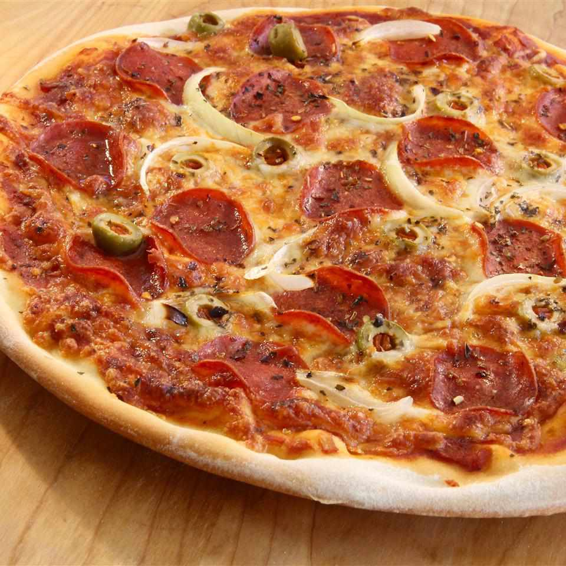

Thin Crust Pizza

Description:
As the name would suggest, it's just a pizza with a flattened dough base.
However, it is a very simple and easy to make dish that only requires common
household ingredients and around 15 minutes of your time to make.
Ingredients
- 1 teaspoon active dry yeast
- 1/4 teaspoon white sugar
- 3/4 cup lukewarm water
- 2 cups all-purpose flour, divided
- 1/2 teaspoon salt
Steps
- Dissolve the yeast and sugar in warm water (44 degrees C) in a bowl.
Let it sit until the yeast softens and starts to form a foam like substance
(around 5-8 minutes).
-
Combine 1 and 3/4 cups of flour and salt in a large bowl. Pour in the
yeast mixture and mix it well until the dough forms into one substance.
-
Lay the dough onto a foured surface and knead it until it is smooth.
Then, add the remaining 1/4 cup of flour if the dough is too sticky.
-
Roll the dough into a 12-inch circle before putting it on a greased pan.
-
Top the crust with any toppings you desire and bake at 260 degrees C until
it turns to a gold colour (around 8-10 minutes).